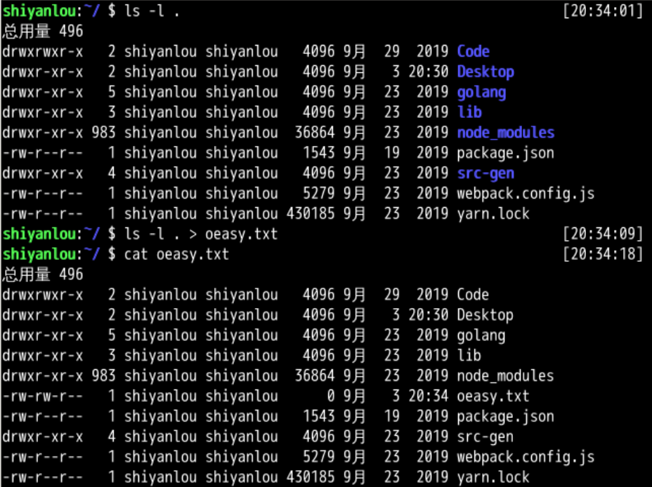
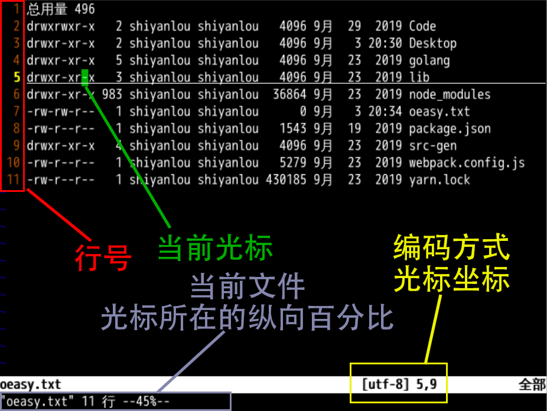
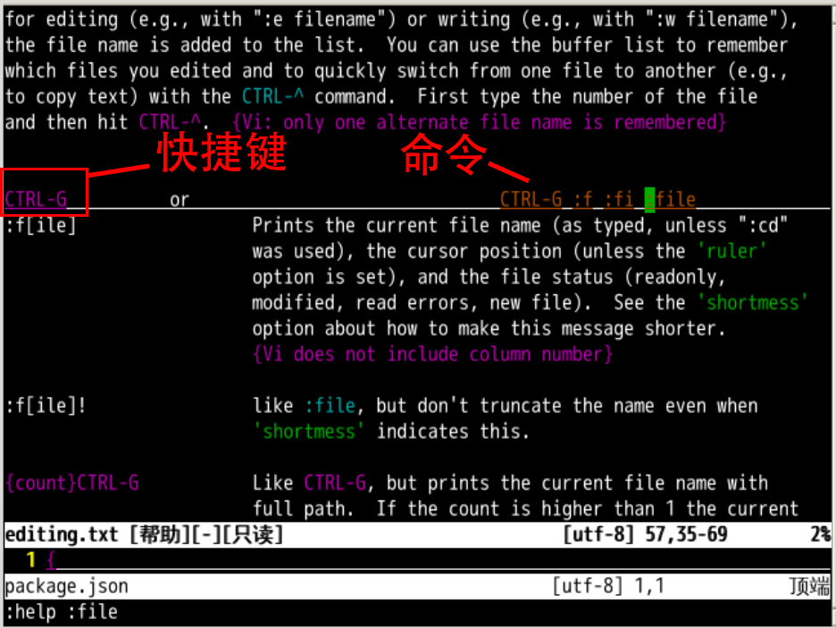

打开文件🔖
回忆上节课内容
- 什么不会,就
:help什么 - 命令有完整和简写两种模式
:help和:h:quit和:q- 注意
:是左右手小拇指配合输入的
vim有6种基本模式- 但是我们还没有打开过文件
创建一个文件📒
- 在终端里面直接运行

#首先对于当前文件夹进行 ls 列表操作
ls -l .
#然后把ls的结果，输出到 oeasy.txt 中
ls -l . > oeasy.txt
#使用cat查看 oeasy.txt 的内容
cat oeasy.txt

打开
用 vim 打开一个 oeasy.txt
vim oeasy.txt
- 我们可以看到在
标准屏幕(80*24)上 - 显示出了
oeasy.txt - 当前
vim处于正常模式（Normal mode）

- 我怎么才能知道 vim 当前编辑的是哪个文件呢？🤔
使用帮助命令
- 键入 :
- 把模式从正常（Normal）切换到命令行（Command-Line）
- 使用
:file- 可以在状态栏看到当前文件的信息
:file有详细的帮助吗？- 输入命令
:h :file，查一下

:f[ile]可简写为:fi:f
- 使用 ctrl+G 也有同样的作用
总结
- 我们制作了
oeasy.txt - 我们用
vim打开了oeasy.txt - 我们分析了
vi环境基本结构 - 我们用
:f[ile]查询了当前文件的信息 - 这个帮助系统好像挺有用
- 还可以获得更多的帮助吗？🤔
- 下次再说！👋